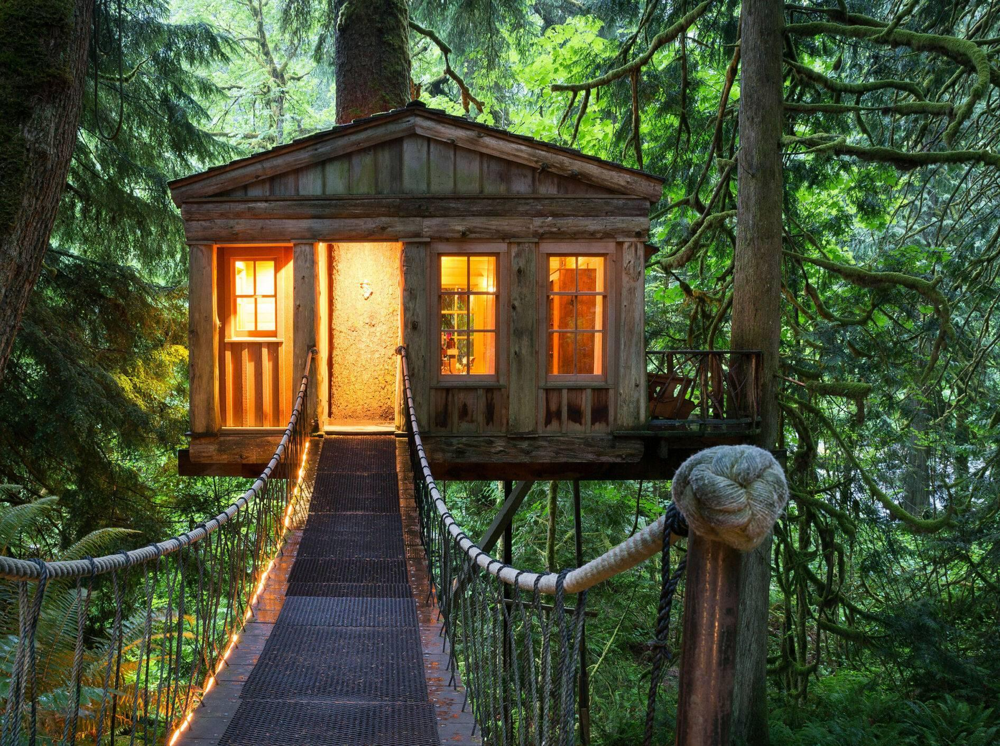
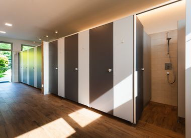
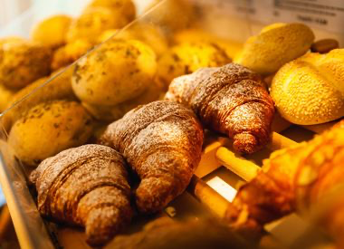

Les informations sur le terrain de camping
Notre camping « Tipis sous les étoiles » s’adresse avant tout aux jeunes et aux familles.
Passer la nuit:
Il y a beaucoup de possibilités d'y passer la nuit. Nous avons des tipis, des maisons dans les arbres, des hamacs, qui sont situés dans la forêt, mais aussi de petites bungalows justes derrière les dunes sur la plage.
Les places pour les tentes sont sur une grande prairie. Là, vous trouvez à la fois des endroits ombragés et des endroits au soleil.

Installations sanitaire:
Il y a trois grandes installations sanitaire avec des douches et lavabos pour les vêtements. Pour laver la vaisselle, il y a, entre autres, des éviers. D'autres toilettes sont répartis sur le camping et sont facilement accessibles depuis n'importe quel emplacement.

Plaisir et sport:
Pour nous, il est très important que tous nos visiteurs s’amusent.
Nous offrons par exemple des terrains de sport pour les personnes, qui ont envie de jouer au foot, au basketball et au volleyball. Pour les petits, il y a aussi un aire de jeux avec des balançoires, et des toboggans. Les enfants adorent surtout le mur d’escalade.
Il ne faut pas non plus oublier de barboter dans la mer. La sécurité est assurée dans une zone surveillée par une tour avec des maîtres nageurs.
Activités:
En plus des activités que vous pouvez faire vous-même, nous avons quelques offres dont nous serons heureux de vous informer à la réception. Par exemple, des cours de plongée, des cours de surf, des cours d’astronomie, des soirées de jeunes avec discothèque et des soirées sur la plage avec barbecue et les boissons du bar de la plage avant un feu de camp.
Pour les cours d’astronomie, on a un observatoire astronomique.
Manger et boire:
Si vous avez faim ou soif après une journée bien remplie, il y a le supermarché ou le restaurant. Quand il fait beau, vous pouvez profiter du soleil et de la nourriture à l'extérieur sur la jetée.
